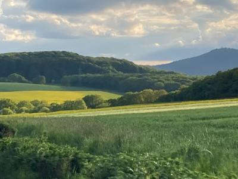
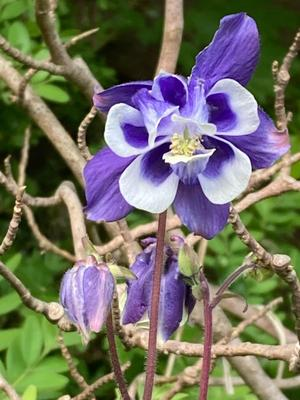
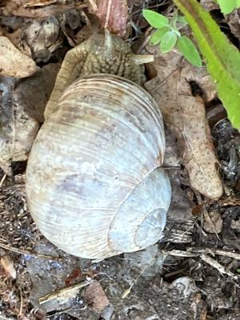
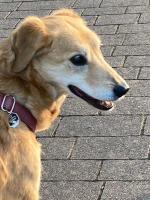
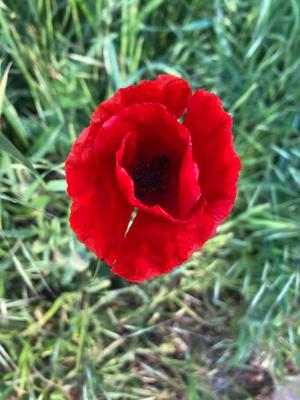

Mit Langsamkeit zur Achtsamkeit
Für die Fellnase ist der Frühabendspaziergang dran. Seit einiger Zeit macht sich ihr Alter der Fellnase bemerkbar und wir sind deutlich langsamer und mit mehr Pausen unterwegs. Wie wir so vor uns her trotten, fällt mir ein das es heute der 8. des Monats ist, also Zeit für #8sammeln von Susanne Wagner.Acht achtsame Momente sammeln. Los gehts!
1. Die Abendsonne taucht die Landschaft in sanftes Licht und lässt die Farben erstrahlen. Mit den Wolken ergibt sich ein tolles Bild.
{kind=link}

Blick übers Feld in der Abendsonne
2. Immer wieder weht mir der Duft von Flieder in die Nase. Ich sehe Fliegerbüsche in weiß, zartrosa und lila. Augen zu und schnuppern.
3. Bei einer Pause sehe ich am Wegrand eine Blüte. Außen sind die Blätter Lila, innen weiß mit lila Herz und gelbe Blütenstempel. Ohne die langsame Fortbewegung wäre mir diese kleine zarte Schönheit entgangen.
{kind=link}

Ein zarter Traum in Lila
4. Während die Fellnase schnüffelnd, sehe ich unter einem Rosenstrauch eine Weinbergschnecke. Ich beuge mich runter und schaue zu, wie sie langsam ihre Fühler streckt und immer ein Stück mehr aus ihrem Haus kommt. Da zieht es an der Leine, da bin ich wohl gerade zu sehr im Schneckentempo für den Vierbeiner.
{kind=link}

Eine Weinbergschnecke
5. Oh, da bekommen wir Gesellschaft. Ein kleiner Hund, den wir noch nicht kennen kommt uns mit seinem Herrchen entgegen. Meine Fellnase bleibt ängstlich stehen und drückt sich an mich. Die Ängstlichkeit wird im Alter auch mehr. Klar es gibt mehr Unsicherheit, wenn sie schlechter sieht und hört. Also bleiben wir stehen. Ich streiche ihr beruhigend über den Rücken. Der kleine hört gut und geht ohne Annährungsversuche vorbei.
{kind=link}

Die Fellnase
6. In den Büschen am Feld singen die Amseln und über dem Feld die Feldlärchen. Etwas später höre ich auch den Turmfalken, der das Abendessen für seine Familie sucht. Ich liebe diese vielfältigen Stimmen im Frühling
7. Um die nächste Ecke entdecke ich Klatschmohn. Einige sind tatsächlich schon verblüht und andere stehen leuchtend Rot leicht im Wind zitternd da. Ich kann die feinen Härchen sehen.
{kind=link}

Roter Klatschmohn
8. So langsam näheren wir uns wieder unserem Zuhause. Früher wurde meine Begleiterin auf dem Nachhauseweg schneller, aber jetzt bleibt sie gemächlich. Meistens schnuppert sie noch mal ausgiebig. Wie ich sie so beobachte sehe ich eine Ameise. Interessiert schaue ich ihr zu. Was trägt sie da? Es sieht aus wie eine tote Fliege. Größer als die Ameise. Schon spannend was diese kleinen Tiere so schleppen können.
Ohne das langsame Gehen hätte ich einige dieser Moment gar nicht wahrgenommen.
Kommentare